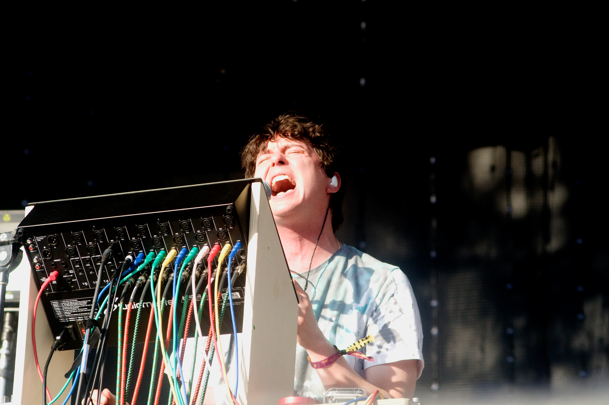

Check out our day by day recap of Pitchfork Music Festival in Chicago! The weekend included a host of eclectic musical acts from indie rock to electronic and hip hop. There was a lot of Chicago pride, as legendary rockers Wilco headlined the fest Friday, Vic Mensa headlined the Blue Stage Saturday, and Chance The Rapper closed out the festival on Sunday to a crowd of thousands. Live vicariously through our pictures over at Facebook and check out our Pitchfork mixtape over at Soundcloud.
IN THIS ISSUE:
 With the Chicago weather finally hitting summer temperatures, opening day of Pitchfork was scorching, but that didn’t stop festival goers from basking, and “baking” in the sun to the day’s performers which included, I Love Makonnen, Mac DeMarco, Chvrches, Panda Bear and the Chicago natives, Wilco...[read more]
Tuesday saw some Seattle-like weather as festival goers got soaked and rained out for a portion of the festival during the Future Island set. When attendees were permitted back onto the grounds, they walked into Woodstock conditions. Day's performers included Shamir, A$AP Ferg, Towkio and, Chicago's Vic Mensa...[read more]
Day three of Pitchfork was bursting at the seams. It appeared everyone had come out of hiding after a blunderous weather weekend to see Sunday headliner, Chicago’s own Chance the Rapper. The day's performers included, Mad Lib and Freddie Gibbs, Caribou, Run The Jewels and the avant gardener Courtney Barnett...[read more]
Pitchfork may be over, but we are still enjoying the feels of the festival's music acts. Check out our AMFM x Pitchfork Mixtape over at our Soundcloud while you're looking at pictures over at our Facebook and you will feel like you were there! Mixtape includes Shamir, Jamie XX, Vic Mensa, Chvrches and more!
Listen here!